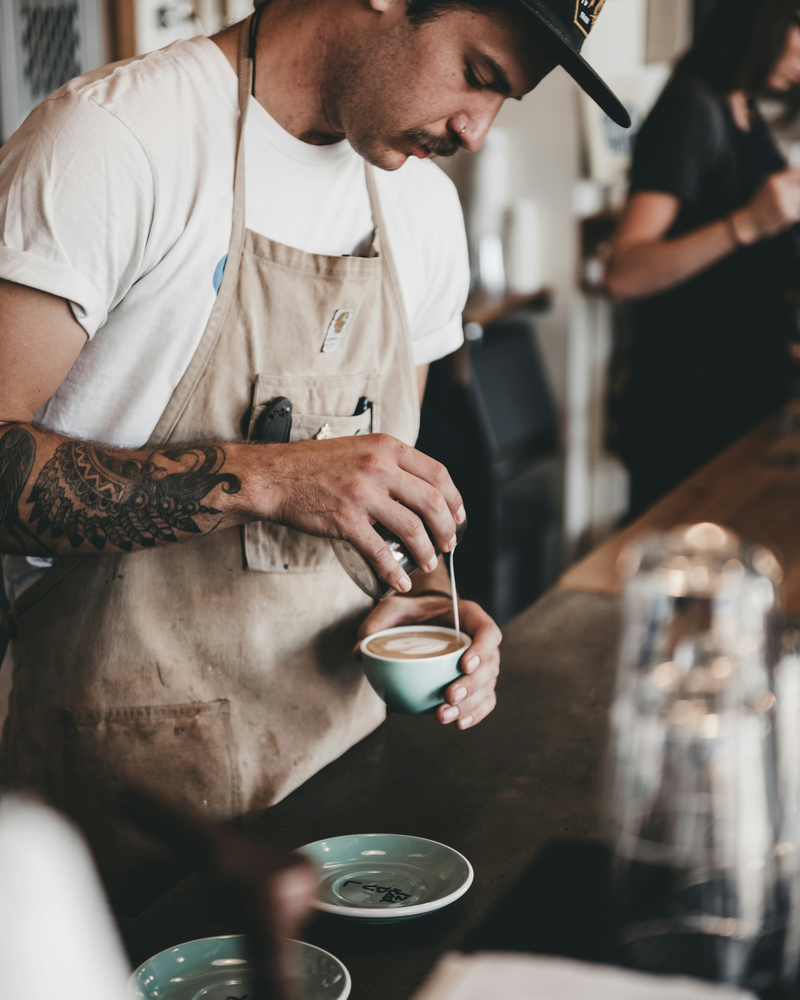
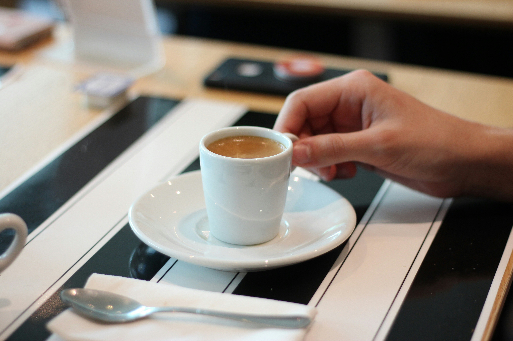
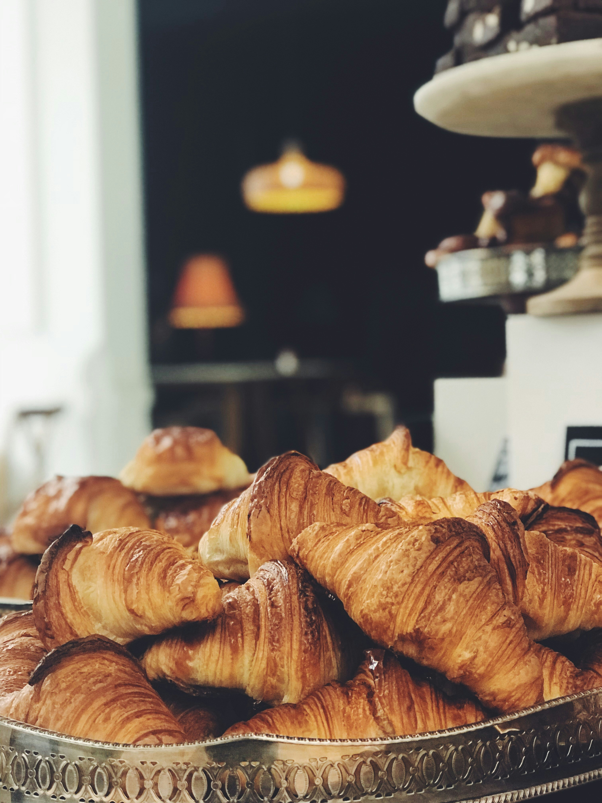
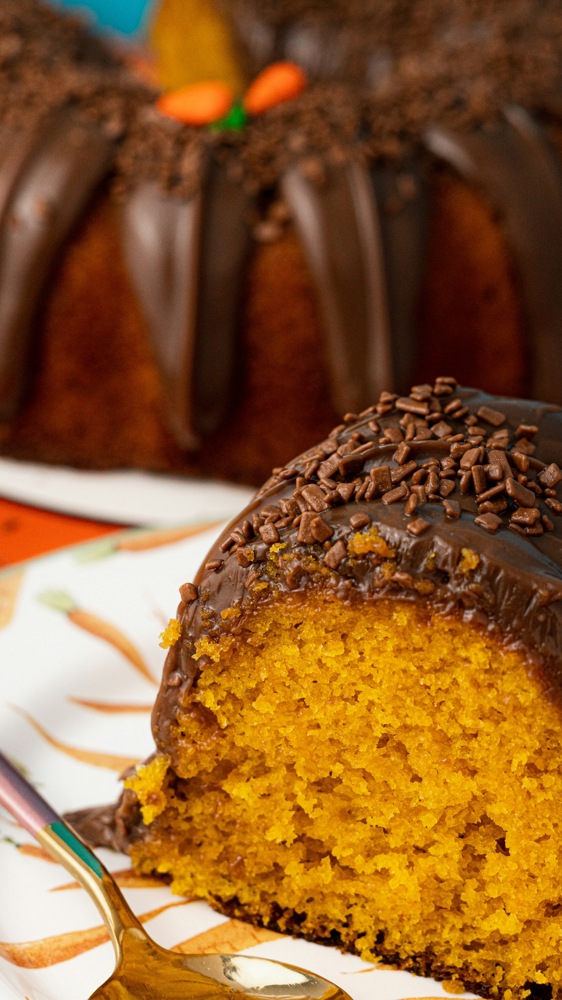

Cafés especiais moídos na hora e pães artesanais feitos com afeto.
Ver Cardápio
O Café & Prosa nasceu do desejo de criar um refúgio acolhedor no meio da rotina agitada. Selecionamos grãos 100% arábica de pequenos produtores locais e preparamos cada receita com técnicas tradicionais de fermentação natural.

Notas sensoriais de chocolate amargo e amêndoas.
R$ 9,00
Massa leve, crocante por fora e macia por dentro com manteiga pura.
R$ 14,00
Receita caseira tradicional coberta com ganache 50% cacau.
R$ 12,00Ambiente pet-friendly equipado para quem precisa trabalhar com tranquilidade.
Torra semanal garantindo aroma fresco e sabor marcante em cada xícara.
Nossos pães e doces são assados diariamente logo nas primeiras horas da manhã.